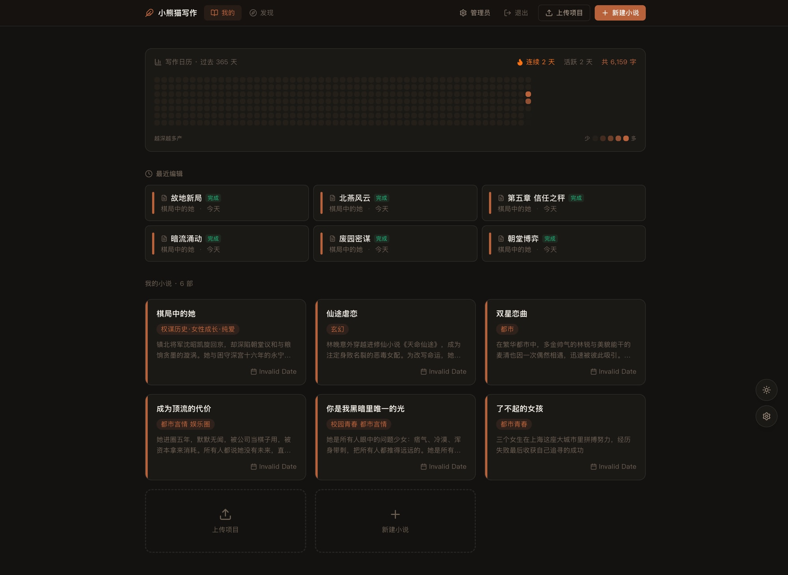
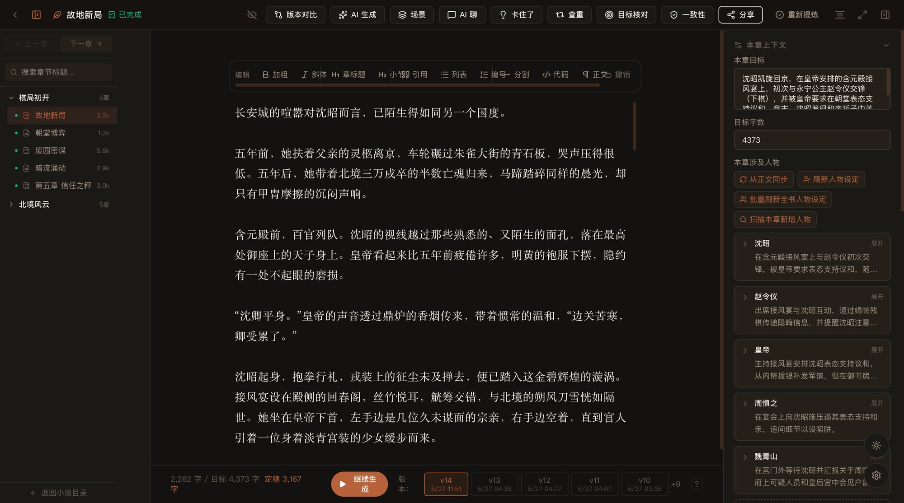
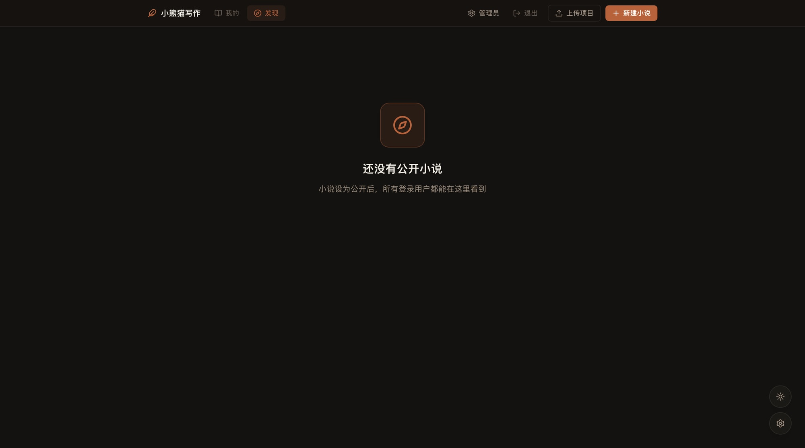

写之前：东西没地方放
我把一部长篇拆成小说、卷、章节、场景四层，让人物和情节都有固定位置，不用散在聊天记录里。
人物受过的伤忘了，早先埋的伏笔也没带回来。问题就来了：下一句也许写得很顺，整部小说却在悄悄走丢。

我把一部长篇拆成小说、卷、章节、场景四层，让人物和情节都有固定位置，不用散在聊天记录里。
当前章节、人物档案、世界观、前情摘要和远处相关情节，要按和这一章的关系带回当下。材料全部塞进去，反而更容易乱。
我后来发现，负责续写和负责检查的两部分如果没读过同一段前情，写对的内容也可能被当成错误。换更强的模型，也补不上没被带回来的那段故事。
从整部小说到每一个场景卡片。
人物、设定、前情与灵感进入写作上下文。
人物、伏笔、时间线、世界观四维检查。
章节版本、全书快照与改动对比。
从进入一部作品，到整理纲要、继续正文、回到创作空间，这四张图就是 InkPanda 真实工作的地方。


